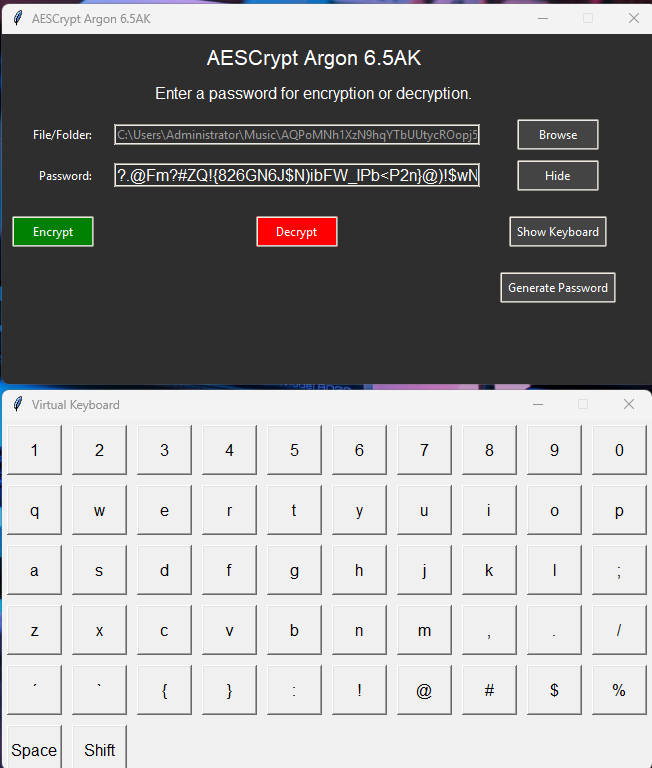

Overview
AESCrypt Argon 6.5AK is the latest and most powerful version of AESCrypt. This tool combines AES-256-GCM encryption for maximum security with the advanced Argon2id hashing algorithm for robust password protection. The software ensures that your sensitive data is protected by the best security practices available today.
This tool also offers additional security measures, including the secure deletion of files, encryption of metadata, and batch encryption capabilities. With an easy-to-use interface available for Windows and Linux systems, AESCrypt Argon 6.5AK is designed to provide a seamless, cross-platform encryption experience for all types of users.
The program leverages multithreading to speed up the encryption and decryption processes, especially when dealing with large files. This ensures that your encryption tasks are completed faster and more efficiently, even with massive datasets.
Features
- AES-256-GCM Encryption: Industry-standard encryption algorithm, providing top-tier security for your files.
- Password Hashing with Argon2id: Defends against brute force and rainbow table attacks, making password-based encryption more secure.
- Secure File Deletion: Overwrites files multiple times to ensure no data is recoverable, enhancing security when deleting sensitive information.
- Metadata Encryption: Encrypts not only the contents of your files, but also protects metadata such as file names and file sizes.
- Batch Encryption: Encrypt multiple files and entire directories with a single click, saving time for bulk encryption tasks.
- Large File Support: AESCrypt Argon 6.5AK is optimized to handle large files without performance issues. Encryption and decryption speeds remain consistent, even for files that are several gigabytes in size.
- Cross-Platform Compatibility: Available for Windows, Linux, and other platforms, ensuring broad accessibility.
- Random Password Generation: Generates strong and random passwords to prevent weak passwords from compromising your security.
- Anti-Keylogger Protection: In-built defense mechanisms prevent malware from capturing your keystrokes during encryption or decryption processes.
Installation
Follow these steps to install AESCrypt Argon 6.5AK on your system:
Prerequisites
Ensure that Python is installed on your system. If not, you can download it from python.org.
Cloning the Repository
To install the tool, clone the official repository from GitHub:
git clone https://github.com/victormeloasm/AESCrypt.gitInstalling Dependencies
After cloning the repository, install the required dependencies by running:
pip install -r requirements.txtCompiling Executable (Optional)
If you want to create a standalone executable for your operating system, you can use PyInstaller:
pyinstaller --onefile aescrypt.pyVirtual Environment (Optional)
It is highly recommended to install and activate a virtual environment to manage dependencies more effectively. To create a virtual environment, run:
python -m venv aescryptenvThen activate the environment:
source aescryptenv/bin/activate # Linux/macOSaescryptenv\Scripts\activate # WindowsUsage
Here's how you can encrypt and decrypt your files using AESCrypt Argon 6.5AK:
Encrypting Files
- Click "Browse File" to select the file you want to encrypt.
- Enter a secure password for encryption, or use the password generator to create a random password.
- Click "Encrypt" to save the encrypted file to your desired location.
Decrypting Files
- Choose the encrypted file you want to decrypt.
- Enter the password that was used to encrypt the file.
- Click "Decrypt" to restore the original file.
Batch Encryption
With AESCrypt Argon 6.5AK, you can encrypt multiple files or entire directories at once. This feature makes encrypting large sets of files simple and fast.
Handling Large Files
For users working with large files, AESCrypt Argon 6.5AK is optimized to handle them efficiently, maintaining high performance even when dealing with files of several gigabytes.
Security Considerations
- Use Strong Passwords: Always choose strong, unique passwords for encrypting files. Avoid using easily guessed passwords.
- File Integrity: The AES-256-GCM algorithm guarantees data integrity. If a file is tampered with, decryption will fail.
- Memory Handling: The tool ensures sensitive data is wiped from memory as soon as it is no longer required, preventing unwanted access.
- Protection Against Keyloggers: The software integrates anti-keylogging mechanisms to protect your password during encryption and decryption processes.
License
AESCrypt Argon 6.5AK is released under the MIT License, which allows free use, modification, and distribution with proper attribution. For more details, consult the LICENSE file in the project's repository.